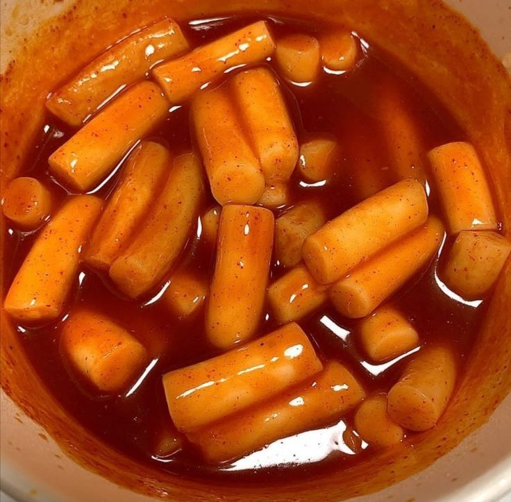
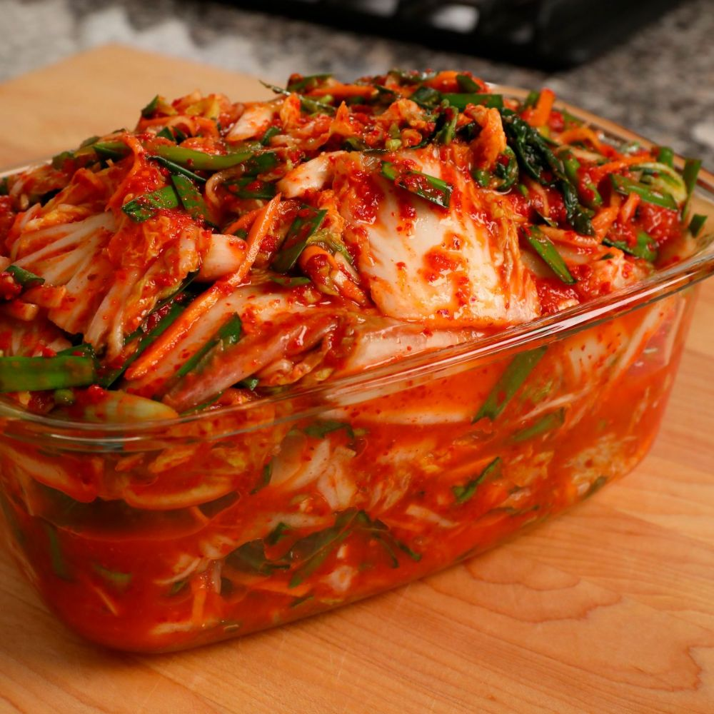

Pratos Coreanos Populares

Bibimbap 🥗
Arroz coreano com vegetais coloridos, carne e ovo — um prato clássico.

Tteokbokki 🌶️
Bolinhos de arroz apimentados em molho gochujang — sabor marcante.

Kimchi 🥬
A famosa conserva fermentada coreana — picante e deliciosa.